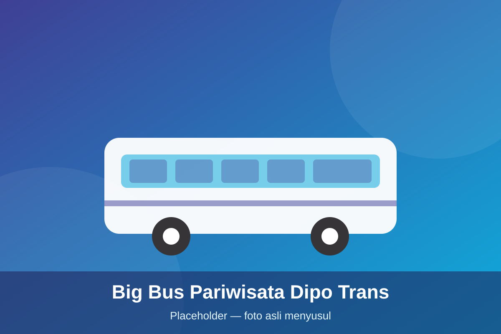

Min. 45 PesertaBig Bus Pariwisata Dipo Trans
Skema rombongan: min. 45 peserta / 1 Big Bus
Bus pariwisata AC milik sendiri (Dipo Trans) untuk Paket Wisata Yogyakarta PP dari Jabodetabek. [Detail unit: dikonfirmasi admin]
Estimasi Harga Mulai Dari
Konsultasi via WhatsApp
Rp1.550.000 / pax